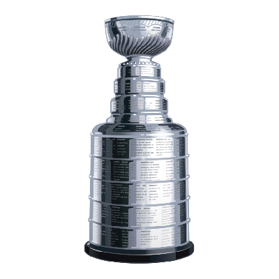

LES ARCHIVES DE LA BHL
Séries éliminatoires
Les parcours. Les rivalités. La Coupe Béliveau.
Découvrir les champions ↓
LA ROUTE VERS LA COUPE
Arbres des séries
LES JOUEURS QUI FONT LA DIFFÉRENCE
Les meilleurs pointeurs en séries
FPTS produits uniquement dans la formation partante d’une équipe BHL, selon le barème et la position de l’époque. Les points de la deuxième ronde interrompue de 2019-20 sont inclus.
Chargement des pointeurs…
| Rang | Joueur | Équipes BHL | PJ | Buts | Passes | FPTS | FP/PJ |
|---|
PJ : matchs NHL disputés lorsque le joueur était partant en BHL. Classement historique provisoire, basé sur la même reconstitution que la page Pointeurs. Les identités non résolues sont exclues.
AU SOMMET DE LA LIGUE
Le mur des champions
L’HISTOIRE EN CHIFFRES
Palmarès des organisations
Bilans du classeur officiel BHL. Les changements de nom des franchises sont regroupés selon les données de la ligue.
2019-20 : saison interrompue en deuxième ronde en raison de la COVID-19. Aucune troisième ronde disputée et aucune Coupe Béliveau attribuée.